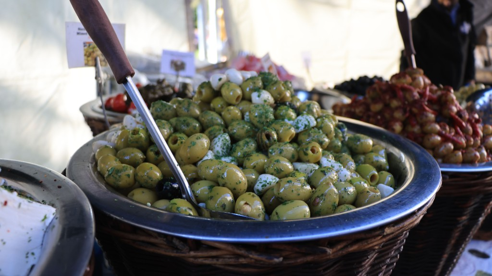

Olives (Olea europaea)
First Cultivated: ~6000 BCE
Optimal Climate: Mediterranean (hot, dry summers)
Water Requirement: 18 to 24 inches annually
The olive tree is among the longest-lived cultivated plants of the Mediterranean basin. Its fruit provided oil for cooking, lighting, and preservation, making olives a cornerstone of coastal economies from the Levant to Iberia. Today, table olives and olive oil remain defining flavors of regional cuisine.